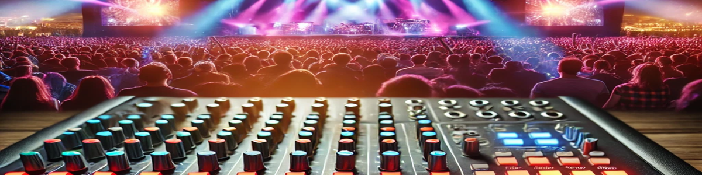

Vaquinha para Compra de Mesa de Som Digital
O que é um Mixer Digital?
Um mixer digital é um equipamento de som usado por músicos e técnicos para controlar e misturar sinais de áudio de várias fontes. Diferente dos mixers analógicos, os mixers digitais oferecem recursos avançados como processamento de efeitos, equalização precisa e controle remoto via dispositivos móveis. Isso permite mais flexibilidade e qualidade de som, essencial para performances profissionais.
Importância de um Mixer Digital para Músicos
Para um músico profissional, ter um mixer digital significa ter mais controle sobre o som durante as apresentações e gravações. Ele proporciona uma mixagem limpa e eficaz, além de recursos de automação e presets para facilitar o trabalho em shows ao vivo e gravações em estúdio.
Opções de Mixers Digitais
| Nome do Mixer |
Canais de Entrada |
Saídas Auxiliares |
Interface de Áudio |
Controle via Tablet |
Gate/Compressor/EQ/Reverb/Delay |
Preço Estimado (R$) |
| Behringer XR12 |
12 (4 pré-amplificados) |
2 |
Sim |
Sim (Wi-Fi) |
Sim |
2.500,00 |
| Behringer XR16 |
16 (8 pré-amplificados) |
4 |
Sim |
Sim (Wi-Fi) |
Sim |
3.500,00 |
| Soundcraft Ui12 |
12 (4 combo XLR/TRS) |
2 |
Sim |
Sim (Wi-Fi) |
Sim |
3.500,00 |
| Soundcraft Ui16 |
16 (8 pré-amplificados) |
4 |
Sim |
Sim (Wi-Fi) |
Sim |
4.000,00 |
| Behringer XR18 |
18 (16 pré-amplificados) |
6 |
Sim |
Sim (Wi-Fi) |
Sim |
5.000,00 |
Como Ajudar
Contribua com a nossa vaquinha e ajude a alcançar a meta para a compra da mesa de som digital!
Pix: 11997178464
Obrigado por apoiar o crescimento da nossa música!